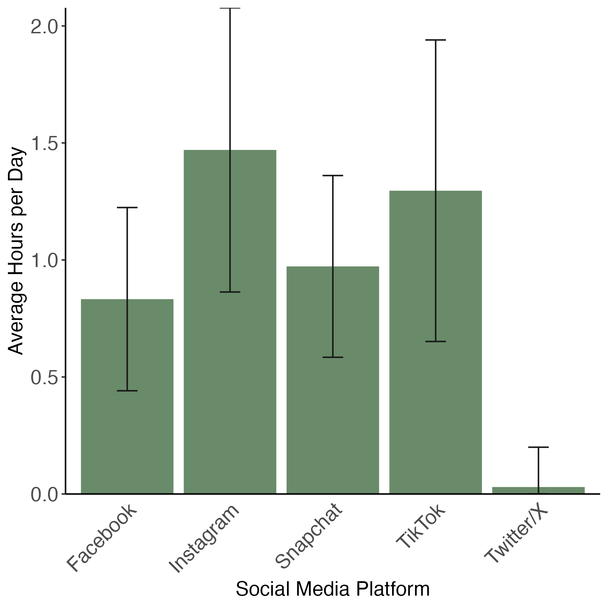
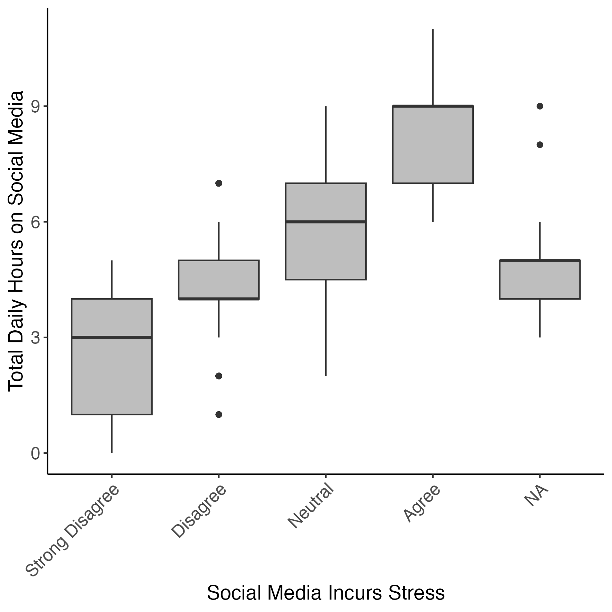
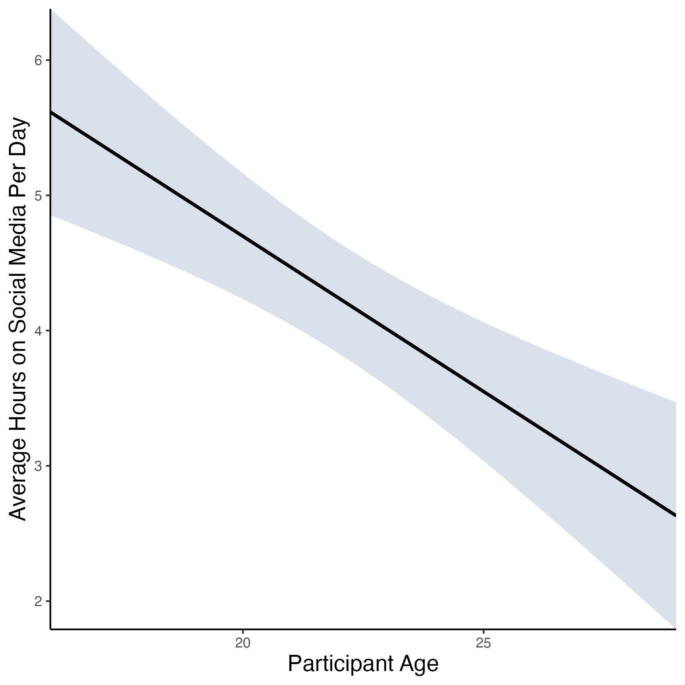

# calculate average hours per platform from ‘survey_long’
platform_mean_hours <- survey_long |>
# for every category in ‘hours_type’...
group_by(hours_type) |>
# summarise dataset down to mean hours per category + standard deviation
summarise(mean = mean(hours_number),
sd = sd(hours_number)) |>
# remove unneeded columns
filter(hours_type != "hours_sleep",
hours_type != "hours_total",
hours_type != "hours_other")Lesson 2 - Data Visualization Activity
In breakout rooms, work together to build the following plots.
Question 1: Bar Plot
TipCreate a Bar Plot
Create a Bar plot to show which social media platforms are used most by respondents.
Start by calculating the average number of hours spent on each platform, across respondents, from survey_long.
View platform_mean_hours and take a look at how the data has been summarized.
Then, use platform_mean_hours to make the following plot:

Save the finished plot to your figures folder with the name survey_student_meantime-platform.png, with a width and height of 150 mm.
Some helpful hints:
- The colour of the bars is
darkseagreen4 - Error bars represent standard deviation, and are added using
geom_errorbar() - You’ll need to rename the x axis text using
scale_x_discrete() - You can change or remove axis ticks using
theme()and the argumentselement_text()to edit text andelement_blank()to remove the chart element - Use the
ggplot2cheat sheet and/or search Google for the changes you want to make to your plot if you get stuck.
TipAnswer
platform_mean_hours_plot <-
# specify data + aesthetics
ggplot(platform_mean_hours,
aes(x = hours_type,
y = mean)) +
# specify geometry
geom_col(fill = "darkseagreen4") + # change fill colour to dark sea-green
# add error bars
geom_errorbar(aes(ymin = pmax(mean - sd, 0), # keep error bar for Twitter above zero
ymax = mean + sd),
width = 0.2, # make error bars less wide
color = "grey10") + # change colour to dark grey
# fix up axes labels
labs(x = "Social Media Platform",
y = "Average Hours per Day") +
# fix up platform labels
scale_x_discrete(labels = c("Facebook",
"Instagram",
"Snapchat",
"TikTok",
"Twitter/X")) +
# remove gap between x axis + plot
scale_y_continuous(expand = expansion(0)) +
# set theme
theme_classic() +
# manually change theme elements
theme(axis.title = element_text(size = 14),
axis.text.x = element_text(size = 14,
angle = 45, # tilt x axis text 45 degrees
hjust = 1), # centre x axis text
axis.text.y = element_text(size = 14),
axis.ticks.x = element_blank()) # remove x axis ticksQuestion 2: Box Plot
TipCreate a Box Plot
Create a box plot to show how perceptions of stress associated with hours spent on social media.
Use survey_short data to make the following plot:

Save the finished plot to your figures folder with the name survey_student_stress-hours.png, with a width and height of 150 mm.
Some helpful hints:
- You’ll need to rename the x axis text using
scale_x_discrete() - Use the ggplot2 cheat sheet and/or search Google for the changes you want to make to your plot if you get stuck.
TipAnswer
stress_total_hours_plot <-
# specify data + aesthetics
ggplot(survey_short,
aes(x = feel_stress,
y = hours_total)) +
# specify geometry
geom_boxplot(fill = "grey") +
# fix up axes labels
labs(x = "Social Media Incurs Stress",
y = "Total Daily Hours on Social Media") +
# fix up agreement labels
scale_x_discrete(labels = c("Strong Disagree",
"Disagree",
"Neutral",
"Agree",
"NA")) +
# set theme
theme_classic() +
# manually change theme elements
theme(axis.title = element_text(size = 14),
axis.text.y = element_text(size = 12),
axis.text.x = element_text(size = 12,
angle = 45,
hjust = 1))Question 3: Linear Regression
TipCreate a Linear Regression
Create a linear regression showing the relationship between respondent age and time spent on social media.
Start by calculating the average number of hours spent on social media by age, from survey_short.
View age_mean_hours and take a look at how the data has been summarized.
Then, use age_mean_hours to make the following plot:

Save the finished plot to your figures folder with the name survey_student_meantime-age.png, with a width and height of 150 mm.
Some helpful hints:
- The colour of ribbon is
slategray3 - A linear regression is plotted using geom_smooth() , specifying
method = ‘lm’ - Use the ggplot2 cheat sheet and/or search Google for the changes you want to make to your plot if you get stuck.
TipAnswer
age_mean_hours_plot <-
# specify data + aesthetics
ggplot(age_mean_hours,
aes(x = age,
y = mean)) +
# specify geometry
geom_smooth(method = "lm",
color = "black", # change colour of regression line
fill = "slategray3") + # change colour of ribbon
# fix up axes labels
labs(x = "Participant Age",
y = "Average Hours on Social Media Per Day") +
# remove gaps between axes and plots
scale_x_continuous(expand = expansion(0)) +
scale_y_continuous(expand = expansion(0)) +
# set theme
theme_classic() +
# manually change theme elements
theme(axis.title.x = element_text(size = 14),
axis.title.y = element_text(size = 14))